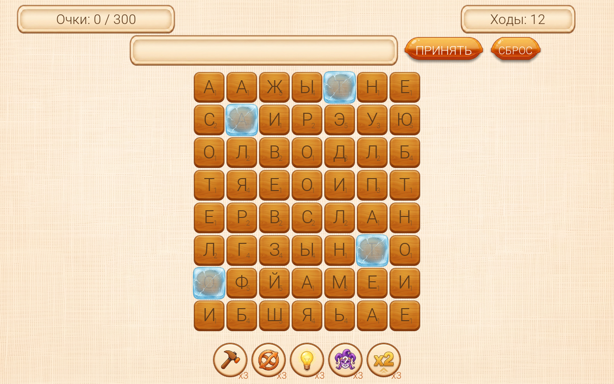
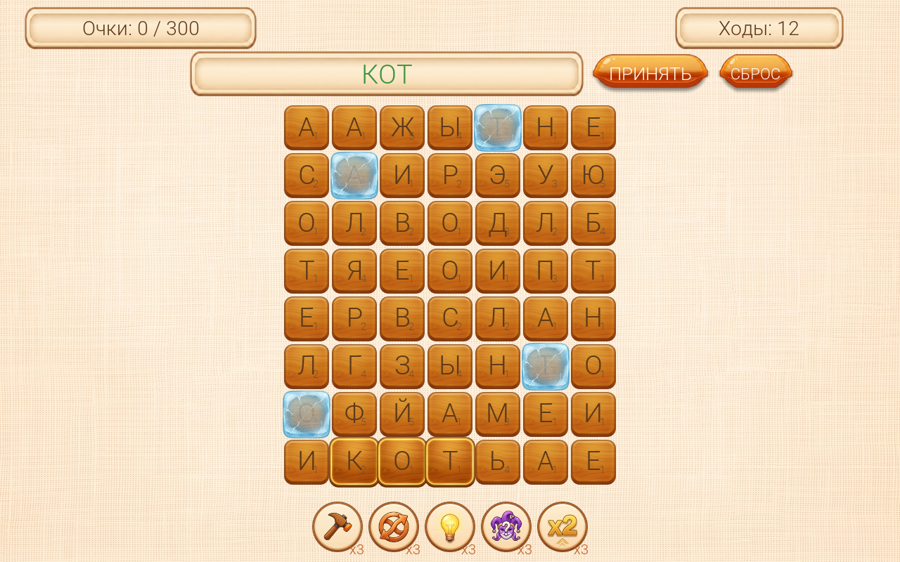
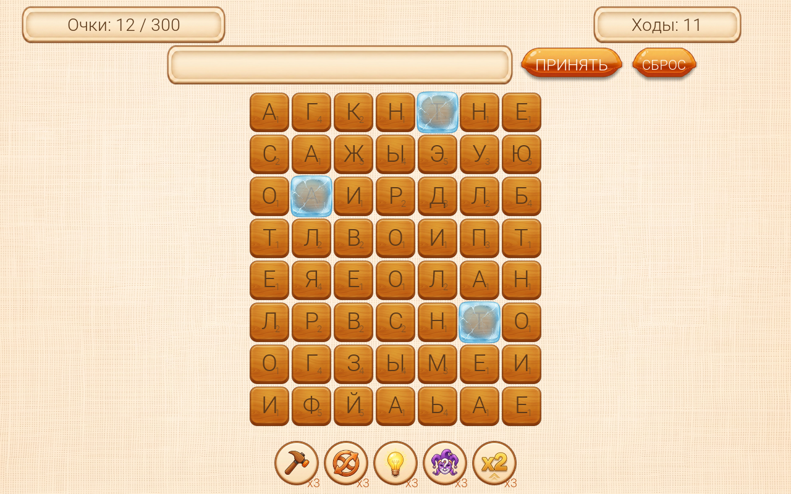
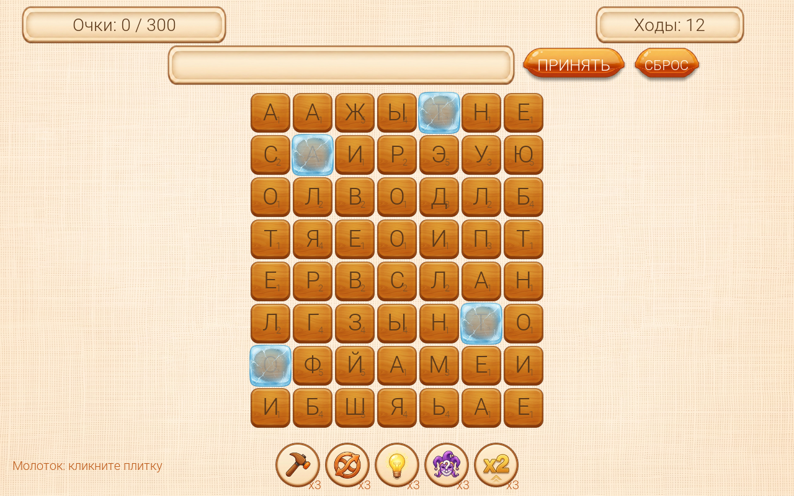
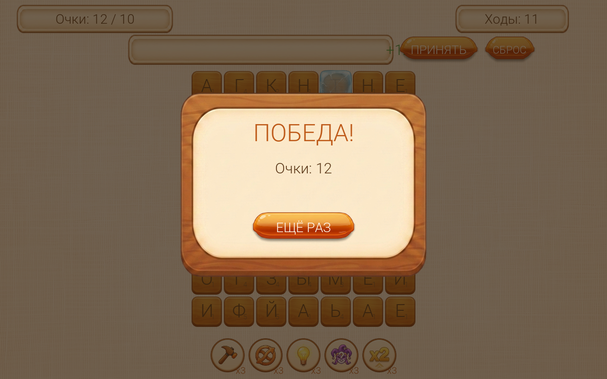
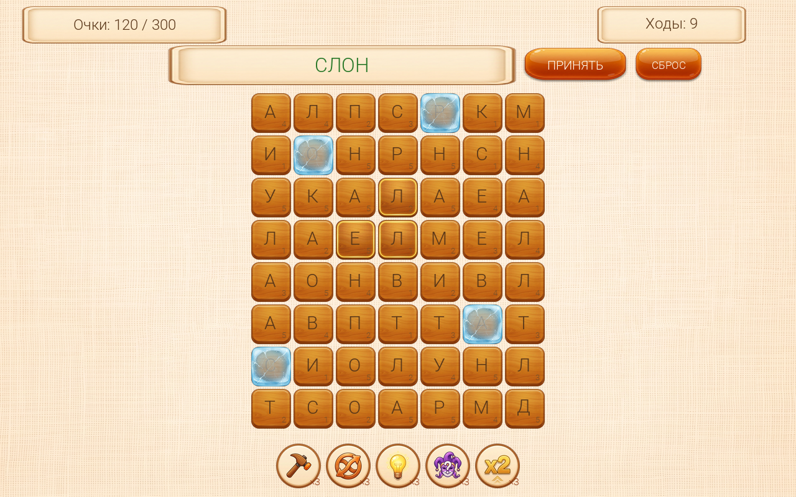
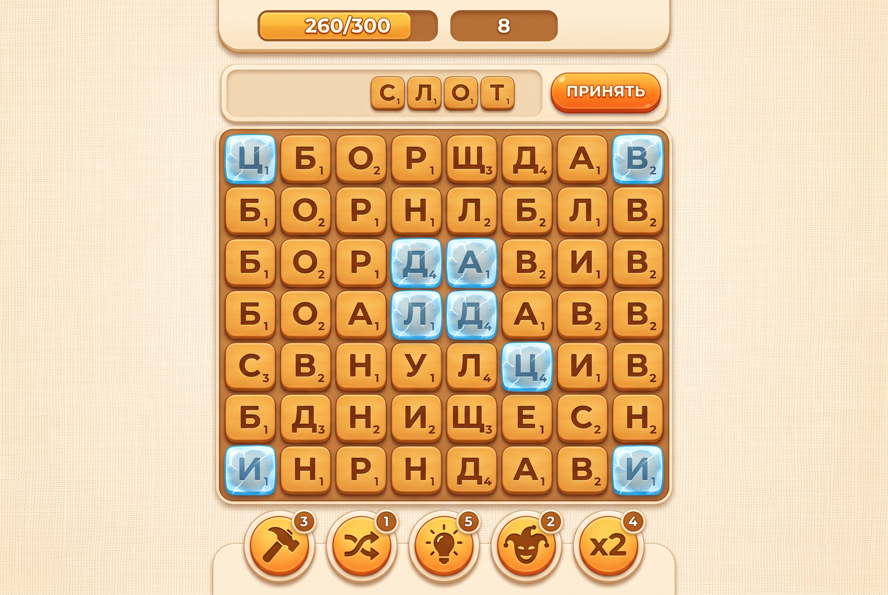
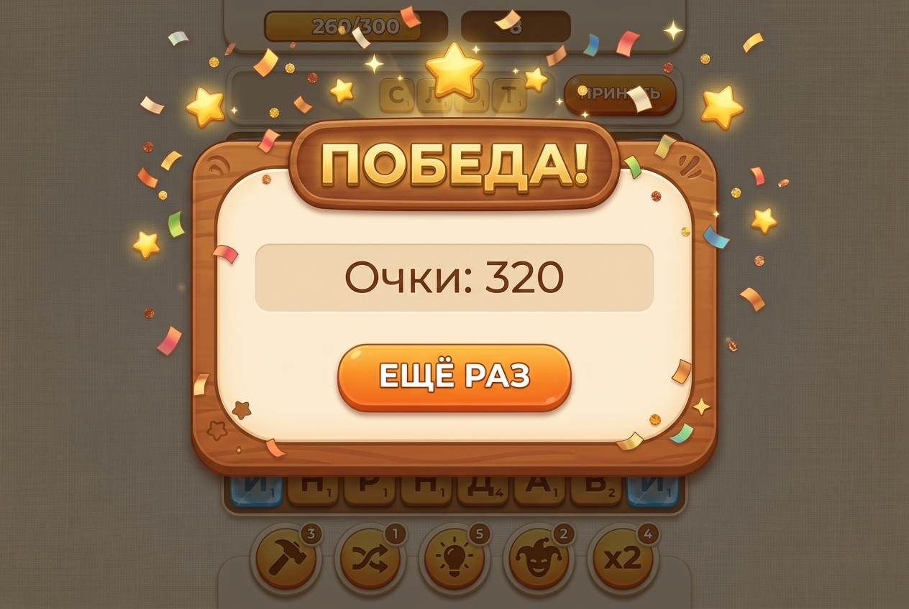

Итог 326/326 тестов зелёные
Готов играбельный прототип: поле 7×8 буквенных плиток, свободный выбор букв по всему полю, бонус за компактность (кластерный множитель по 8-соседству), множитель длины слова, гравитация с падением и спавном из сбалансированного «мешка», ледяные блоки, 5 бустеров (молоток, перемешивание, подсказка, джокер, удвоитель), уровень с целью 300 очков за 12 ходов, попапы победы/поражения и рестарт. Словарь — ~460 русских существительных, проверка с джокер-матчингом.
Скриншоты игры






Концепты и арт


Спрайты генерировались по одному с прозрачностью (плитка, выделение, лёд, 5 бустеров, панель,
кнопка, попап, фон, звезда), затем питон-скрипт тримил альфу и ресайзил в
Assets/WordFall/Sprites/. Буквы и цифры — не в спрайтах, а движковым текстом
(debugFont.ttf, кириллица покрыта полностью), поэтому поле полностью динамическое.
Этапы работы
| Этап | Результат |
|---|---|
| 1. Разведка | Карта JS-API движка (фоновый агент), эталон Dragon Defense из git-истории |
| 2. GDD | Work/GDD.md: правила, очки, мешок, уровни, бустеры |
| 3. Арт | 2 концепта + 12 спрайтов в едином стиле, визуальная проверка каждого |
| 4. Раскладка | Python-композит экрана из спрайтов, сверка с концептом |
| 5. Архитектура | Work/Architecture.md: C++ bootstrap + JS модель + JS вью |
| 6. C++ | WordFallBootstrap строит сцену кодом; bootstrap-сцена WordFall.scn одна для игры и редактора |
| 7. JS | WordFallGame.js: WordModel (чистая логика) + вью-контроллер (onClick, синк, анимация падения) |
| 8. Тесты | 22 headless-теста модели + 6 UI-тестов с реальными кликами и скриншотами |
Архитектура
- C++ bootstrap — вся статика сцены: слои, камера, 56 кнопок-плиток (слои back/sel/letter/points/ice), HUD, бустеры, попап. Из JS создать это нельзя (нет биндингов шрифтов/ассетов) — и не нужно.
- WordModel (JS) — чистая, детерминированная (LCG-сид) логика без движка: тестируется headless через
o2Scripts.Eval. - WordFallGame (JS) — контроллер на
ScriptableComponent: единственное событие движка в JS —Button.onClick, поэтому весь ввод построен на кнопках.
Сложности и решения
WordFall_instance = this внутри метода класса кидает ReferenceError (тела классов всегда strict). Решение: globalThis.WordFall_instance = this.GetChild("../Board/…") от актора контроллера.cmake --preset mac перед сборкой.InFile + o2Scripts.Parse) — путь, уже проверенный FoxModelTests.Файлы прототипа
| Путь | Что |
|---|---|
Sources/Game/WordFall/WordFallBootstrap.{h,cpp} | Сцена кодом + подключение JS |
Sources/Game/GameApplication.cpp | Точка входа: сохранение/запуск bootstrap-сцены |
Assets/Scripts/WordFallGame.js | Модель, словарь, вью-контроллер |
Assets/WordFall/Sprites/ | Спрайты игры |
Assets/WordFall.scn | Bootstrap-сцена (игра и редактор) |
Sources/GameTests/WordFallModelTests.cpp | 22 headless-теста модели |
Sources/GameUITests/WordFallUITests.cpp | 6 UI-тестов с кликами и скриншотами |
Work/GDD.md, Work/Architecture.md, Work/worklog.md | Документация |